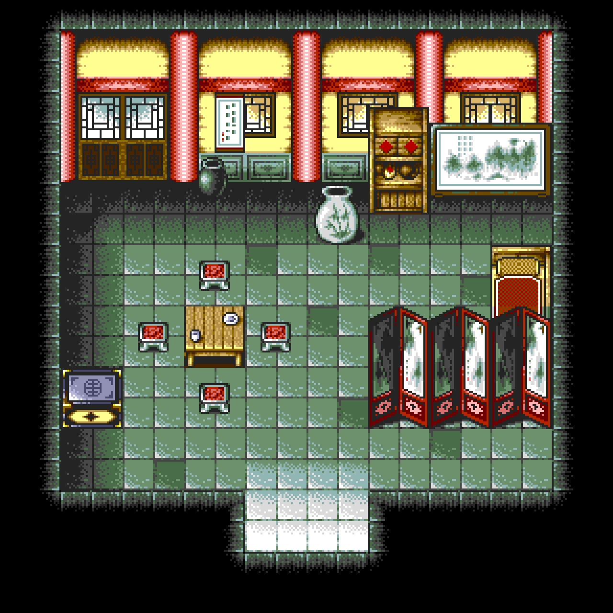
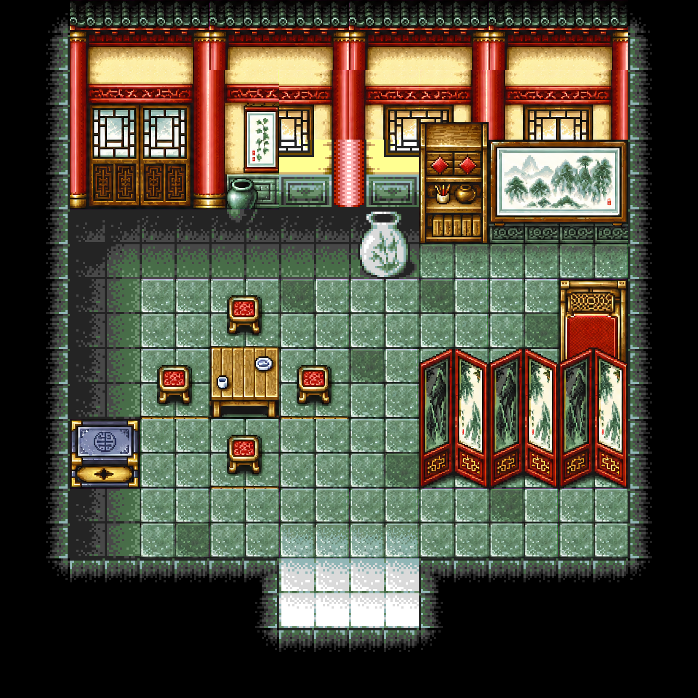
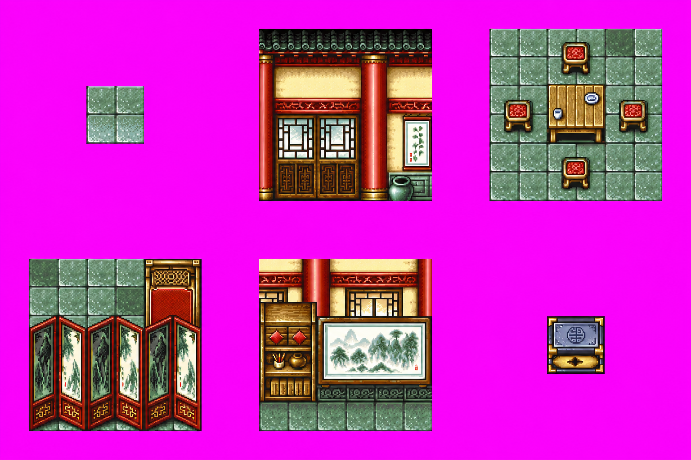

← 返回素材总览现代像素风 · 开场房间小样
保留原版空间布局，增加木雕、器物和地面的细节。由 6 组组件重绘后切成 28 个图块，再按原版地图编号拼回 54 个格子；剩余 46 格保留原版放大。
这是局部美术试样，尚未替换游戏。墙面接缝、部分图块色差和新旧材质混用仍需修整。地图格子、通行数据与隐藏点未改动；正式接入前仍需检查画面轮廓与阻挡边界是否吻合。

原版 · 等比例放大
局部重绘 · 第一版这次重绘的六组组件
地砖、墙窗、茶桌与凳子、屏风与椅子、柜架与挂画、宝箱。紫色是组件定位底色，不会放入地图。

实际用于拼接的图块
使用已有平台配置的 GPT Image 2.5 接口（gpt-image-2.5-sunburst），通过图片生成 CLI 制作。查看生成提示词 · 查看拼接记录 · 打开完整对照图